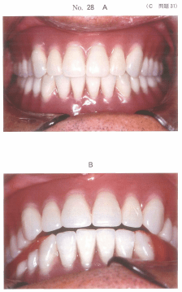
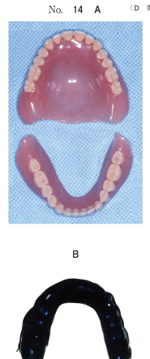
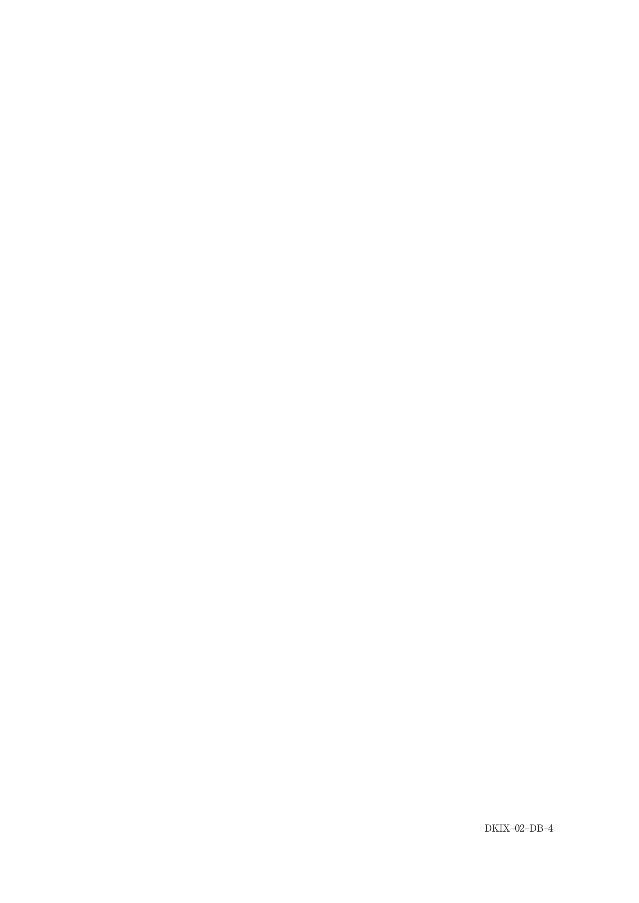
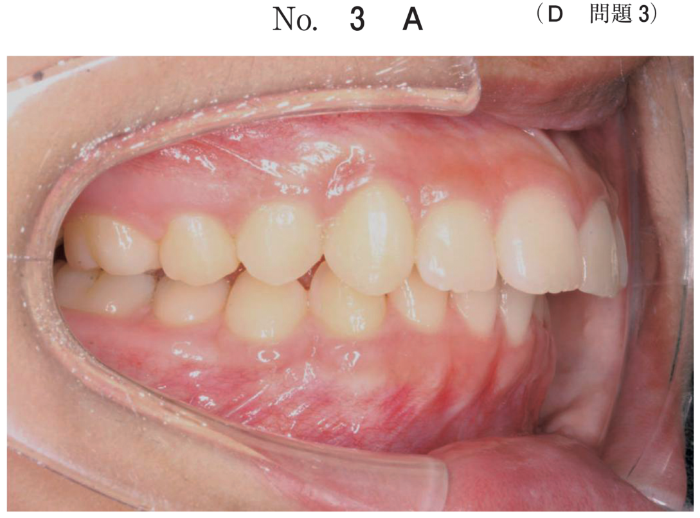
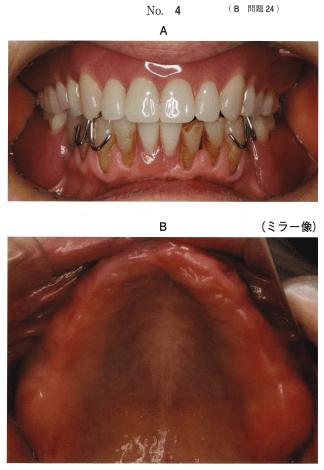
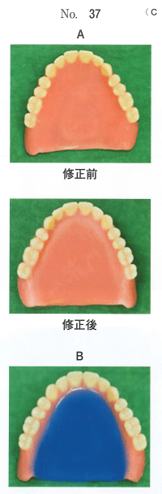

新義歯装着後の不快事項
装着後の調整
義歯装着後の調整時期は、翌日、3日後、1週間後が基本となる。義歯床下粘膜に大きい障害が生じる前に調整することが重要である。
主訴と原因の対応
| 主訴 | 形態に関連する内容 | 機能に関連する内容 |
|---|---|---|
| 咀嚼時疼痛 | 過長な床縁、義歯床粘膜面の不適合、リリーフ不足 | 咬合不調和による義歯の動揺 |
| 維持・安定の不良 | 過長/短い床縁、不良な床縁形態、不十分なポストダム | 咬合不調和による義歯の動揺 |
| 咬舌 | 舌側寄りの臼歯部人工歯排列、オーバージェット不足 | 低すぎる咬合高径 |
| 咬頬 | 頬側寄りの臼歯部人工歯排列、オーバージェット不足 | 低すぎる咬合高径 |
| 構音障害 | 人工歯排列位置の不良、口蓋形態の不良 | 高すぎる咬合高径 |
咀嚼時疼痛の原因と対応
義歯床粘膜面の不適合
- 適合検査（シリコーンペースト、PIPなど）で強圧部位を特定
- 義歯床粘膜面の削合で対応
咬合不調和（咬合のずれ）
- 緊密な咬頭嵌合位と軽い咬合で義歯の位置が異なる場合 → 再咬合採得による義歯のリマウント
- 早期接触がある場合 → 咬合調整
床研磨面の形態不良
頬粘膜や舌に疼痛・腫脹を生じる場合は、床研磨面形態の修正を行う。
発音障害の原因と対応
パ行音・マ行音の発音障害
口唇の閉鎖に関係する。上顎前歯部床研磨面形態の修正で対応。
カ行音の発音障害
義歯床後縁部の厚径が原因となることが多い。
嚥下困難の対応
食物が飲み込みにくい場合は、舌と床の接触関係の改善（口蓋部の形態修正）で対応。
就寝時の顎堤粘膜損傷
残存歯がある患者で、就寝時に義歯を外していると残存歯が対合顎堤粘膜を損傷することがある。この場合は就寝時の義歯装着を指示する。
- シリコーンペースト：空隙量の評価、義歯床辺縁の形態の評価に優れる
- PIP（Pressure Indicating Paste）：強圧部位の検出に優れる
過去問
72歳の男性。全部床義歯の安定不良による咀嚼障害を主訴として来院した。新義歯を製作し、義歯調整を数回行ったが、下顎義歯床下粘膜の疼痛が改善しなかった。義歯の適合には問題がなかった。緊密な咬頭嵌合位をとらせた時の写真（別冊No.28A）と軽く咬頭嵌合位をとらせた時の写真（別冊No.28B）とを別に示す。
行うべき処置はどれか。1つ選べ。

b 咬合面の削合調整
c 下顎義歯のリライン
d 下顎義歯床粘膜面の調整
e 再咬合採得による義歯のリマウント
【解説】緊密な咬合と軽い咬合で義歯の位置が異なる場合、咬合のずれが原因。再咬合採得による義歯のリマウントで対応する。
63歳の男性。上下顎の全部床義歯の製作を希望して来院した。新義歯を製作し装着したが、調整中に左側頰粘膜後方部に疼痛と腫脹とが発生した。その時の口腔内写真（別冊No.27A、B）、咬合時の顔貌写真（別冊No.27C）、中心咬合位での咬合接触状態の写真（別冊No.27D）、適合試験の写真（別冊No.27E）及び上下顎義歯の嵌合状態の写真（別冊No.27F）を別に示す。腫脹部を矢印で示す。
原因はどれか。1つ選べ。

b 低位咬合
c 早期接触
d 床研磨面の形態不良
e 人工歯の排列位置不良
【解説】頰粘膜後方部の疼痛・腫脹は床研磨面の形態不良による。床研磨面が頬粘膜を圧迫している。
71歳の男性。義歯で食物を細かくしにくいことを主訴として来院した。1か月前に義歯を新製した。しっかり嚙みしめることはできるという。咬合力計で最大咬合力を検査したところ、右側で100N、左側で80Nであった。義歯の写真（別冊No.14A）とシリコーンゴムによる咬合接触検査の結果（別冊No.14B）とを別に示す。
疑われる原因はどれか。1つ選べ。

b 維持力の不足
c 床外形の不良
d 咬合接触点の不足
e 人口的頰舌的排列位置の不良
【解説】しっかり噛みしめることはできるが食物を細かくしにくい場合、咬合接触点の不足が原因。咬合接触検査で接触点が少ないことを確認する。
77歳の男性。上下顎全部床義歯の試適時に「パ」行音と「マ」行音とが発音しにくいという。維持は良好である。旧義歯では発音不良を認めなかった。試適時の写真（別冊No.4）を別に示す。
対応として正しいのはどれか。1つ選べ。

b 咬合高径を低くする。
c 小臼歯を頰側へ排列する。
d 前歯部人工歯幅径を大きくする。
e 上顎前歯部床研磨面形態を修正する。
【解説】パ行音・マ行音は口唇の閉鎖に関係する。上顎前歯部床研磨面形態の修正で対応する。
66歳の男性。10日前に装着した義歯で硬い食物を噛むと右側臼歯部粘膜が痛いという。口腔内写真（別冊No.10）を別に示す。
まず行うべき処置はどれか。2つ選べ。

b 咬合調整
c 義歯床後縁の切除
d フラビーガムの切除
e 右側義歯床縁の調整
【解説】硬い食物を噛むと痛い場合、まず咬合調整と義歯床縁の調整を行う。
76歳の女性。上顎前歯部顎堤の疼痛を主訴として来院した。半年前に上下顎義歯を新製したが、最近になって起床時に下顎残存歯に対向する顎堤粘膜の疼痛を自覚するようになったという。就寝中は義歯を外しており、日中の義歯使用時に疼痛は認められない。初診時の義歯装着時の口腔内写真（別冊No.4A)と上顎顎堤の写真（別冊No.4B)を別に示す。
まず行うべき対応はどれか。1つ選べ。

b 残存歯の削合
c 人工歯の咬合調整
d 義歯床粘膜面の削合
e 就寝時の義歯装着の指示
【解説】就寝中に義歯を外していると、下顎残存歯が対合顎堤粘膜を損傷する。就寝時の義歯装着を指示する。
70歳の女性。食事がしにくいことを主訴として来院した。1週前に上顎全部床を装着したが、装着後から食物が飲み込みにくいという。咀嚼と発音に問題はない。診察と検査の結果、チェアサイドで上顎義歯の修正を行うこととした。修正前後の義歯の写真（別冊No.37A）と修正中のある技工操作の写真（別冊No.37B）を別に示す。
この操作の目的はどれか。1つ選べ。

b 床の強度増加
c 義歯の安定向上
d 発音機能の改善
e 舌と床の接触関係の改善
【解説】嚥下困難の場合、舌と床の接触関係の改善（口蓋部の形態修正）で対応。